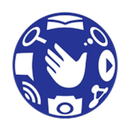

GLOBE • HANDSET TRACKER
ثبّت البرنامج على شاشة الموبايل
وصول أسرع إلى Handset Pre-Order & Requests من الشاشة الرئيسية، مع شعار Globe وواجهة مستقلة عند دعم الجهاز.
فتح البرنامج مباشرة ←طريقة التثبيت
Android: افتح القائمة ⋮ في Chrome، ثم اختر Install app أو Add to Home screen.
iPhone: افتح قائمة المشاركة ⬆ في المتصفح واختر Add to Home Screen ثم Add.
يحتاج البرنامج إلى الإنترنت وتسجيل الدخول بحساب Google المعتمد. لا يتم تثبيت ملفات العملاء محلياً بواسطة هذه الميزة.